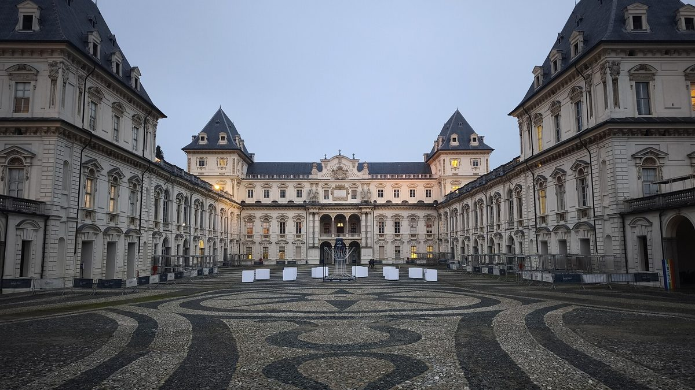

Sede Centrale
Corso Duca degli Abruzzi 24 — Officina Nord nel festival immaginario.
12–13 giugno · Torino · Festival immaginario
Tre spazi, tre ambienti per esplorare design e comunicazione visiva.
Scopri le tre sedi del festival e visita virtualmente gli spazi dove si svolgeranno incontri, laboratori e mostre.
Corso Duca degli Abruzzi 24 — Officina Nord nel festival immaginario.

Viale Mattioli 39 — Spazio Forma nel festival immaginario.

Corso Luigi Settembrini 178 — Cortile Comune nel festival immaginario.